第1轮 #1 · A · 酰氯乙酰化
去重组10002586 → 实际来源10002586，来源分数18，组最高分18；组内1条来源，仅本条参与本次分析。
原文明确苯胺与乙酰氯得到乙酰苯胺，报告93%及表征，直接相关。反应物数组重复列了苯胺，不能据此推断真实双倍投料；这也使精确字符串去重漏合并。
文献US12006301 · ['p-0091'] · 原文已定位
实际产物与底物
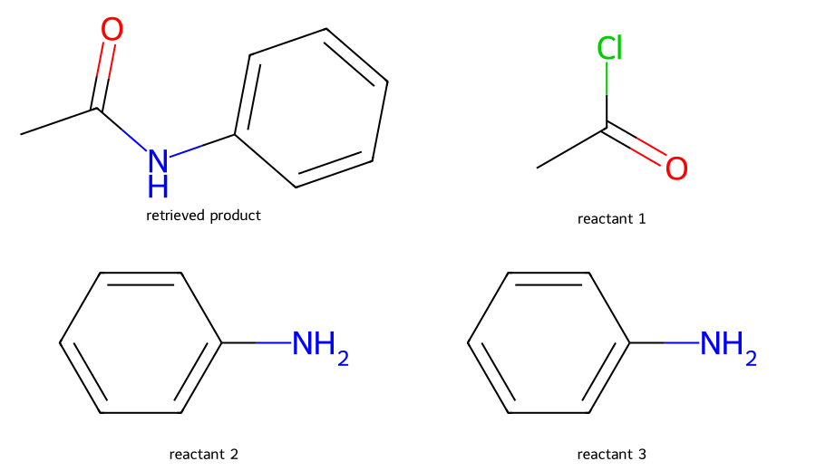
2026-11-01 · 直接使用生产适配逻辑 · 数据库只读 · 每条返回实验自身分数≥12
22次查询：中位3.33秒，P95 6.02秒；首轮有明确方法参考价值28/55，第二轮30/55。
来源与分数绑定问题已修复，但不代表化学质量整体提高。T04首轮一次来源选择超时，第二轮无超时且前五名不同，两个结果都保留。旧v3报告还使用了更新最高分之前的表，不能把全部变化归因于适配。完整说明
| 目标 | 首次/重复秒 | 首轮有用@5 | 重复轮有用@5 |
|---|---|---|---|
| T01 乙酰苯胺：小分子酰胺 | 5.75/1.99 | 1/5 | 1/5 |
| T02 β-丙氨酸乙酯：无环目标 | 4.58/2.10 | 3/5 | 3/5 |
| T03 甲氧基苯基–吡啶：联芳基 | 6.66/2.44 | 5/5 | 5/5 |
| T04 Boc哌啶–氟苯甲酰胺：支链接母核 | 5.93/2.80 | 1/5 | 3/5 |
| T05 Boc哌啶β-酮酯：库内阳性 | 6.02/2.50 | 3/5 | 3/5 |
| T06 Boc脯氨酸甲酯：手性目标 | 5.94/1.94 | 4/5 | 4/5 |
| T07 Boc哌啶酰化Meldrum酸：库内阳性 | 3.68/2.86 | 4/5 | 4/5 |
| T08 2-吡咯烷酮：小环内酰胺 | 5.38/1.58 | 4/5 | 4/5 |
| T09 多取代苯甲酰胺：无精确先例目标 | 4.21/2.97 | 1/5 | 1/5 |
| T10 氟代联芳基羟乙基酰胺：无精确先例目标 | 5.17/2.66 | 2/5 | 2/5 |
| T11 氟代支化氨基酯：无精确先例目标 | 3.99/1.94 | 0/5 | 0/5 |
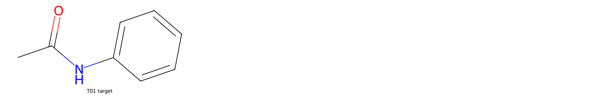
去重组10002586 → 实际来源10002586，来源分数18，组最高分18；组内1条来源，仅本条参与本次分析。
原文明确苯胺与乙酰氯得到乙酰苯胺，报告93%及表征，直接相关。反应物数组重复列了苯胺，不能据此推断真实双倍投料；这也使精确字符串去重漏合并。
文献US12006301 · ['p-0091'] · 原文已定位

去重组3422988 → 实际来源3422988，来源分数12，组最高分12；组内2条来源，仅本条参与本次分析。
给定底物是Cbz保护4-苯胺基哌啶，乙酸酐一般应乙酰化该胺，而不是无解释地丢掉哌啶部分形成乙酰苯胺。未定位原文，当前图不足以作为目标正例。
文献US05559131 · ['p-0148'] · 原文未定位

去重组3014968 → 实际来源3014968，来源分数19，组最高分19；组内1条来源，仅本条参与本次分析。
乙酸与苯胺连接方向相关，活化剂也有对应线索，但未定位该原段落，保留候选而不升级为已核实实验。
文献US04242507 · ['p-0067'] · 原文未定位
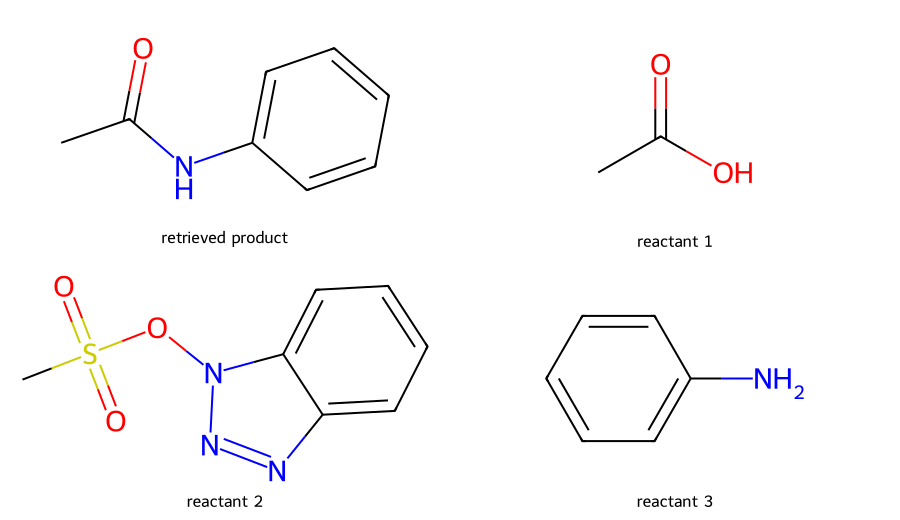
去重组3331069 → 实际来源3331069，来源分数15，组最高分15；组内1条来源，仅本条参与本次分析。
苯异氰酸酯与乙酸的结构关系可提供酰胺形成线索，但未定位该原段落，不能凭图认定其条件和结果已得到支持。
文献US05260483 · ['p-0051'] · 原文未定位
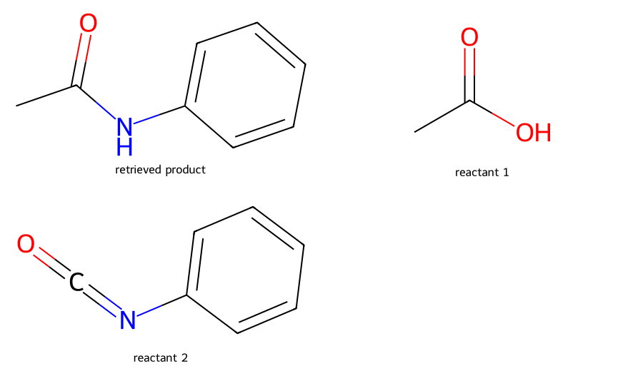
去重组2909153 → 实际来源2909153，来源分数18，组最高分18；组内8条来源，仅本条参与本次分析。
乙酸与苯胺连接目标方向合理，涉及亚磷酸单乙酯；未定位该来源原文，不升级为可靠目标实验。
文献US03974219 · ['p-0035'] · 原文未定位
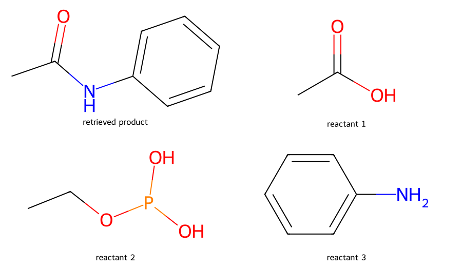
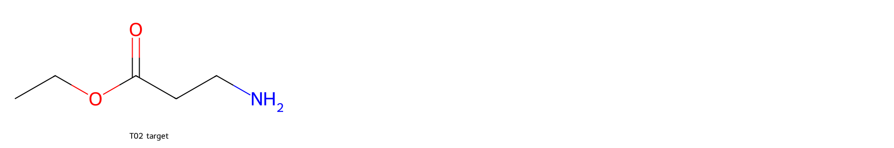
去重组576028 → 实际来源576028，来源分数14，组最高分14；组内1条来源，仅本条参与本次分析。
叠氮丙酸乙酯氢化生成目标伯胺且乙酯保留，原文81%与表征支持目标。
文献EP06291157A1 · ['p0126'] · 原文已定位

去重组1061406 → 实际来源5058278，来源分数12，组最高分12；组内11条来源，仅本条参与本次分析。
实际12分来源原文支持β氨基酯Boc脱保护；目标可改酯端并考虑游离胺/盐形。该来源所属组代表原为10分，适配后已恢复到第二名。
文献US20120071479A1 · ['p-0269'] · 原文已定位

去重组7162610 → 实际来源7162610，来源分数12，组最高分12；组内2条来源，仅本条参与本次分析。
二氧杂环酮与丙醇生成乙酰乙酸丙酯，既不形成目标伯胺，也不是目标乙酯链；共享酯片段不足以作为目标方法。
文献US20170327625A1 · ['p-0264'] · 原文已定位
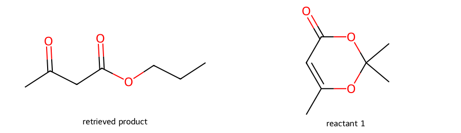
去重组10434673 → 实际来源10434673，来源分数13，组最高分13；组内1条来源，仅本条参与本次分析。
环丙基氨基酯的叠氮前体Pd/C氢化，展示脂肪叠氮到伯胺且酯保留，目标可考虑对应无环叠氮前体；不等于来源环骨架直接变成目标。
文献US12466821 · ['p-0533'] · 原文已定位
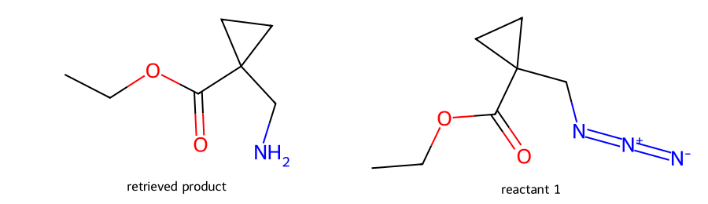
去重组3196683 → 实际来源3196683，来源分数16，组最高分16；组内1条来源，仅本条参与本次分析。
输入图为N-甲基苯胺，产物却是N-苄基β氨基酯；简单丙烯酸酯加成不能把N-Me/Ph重排成N-CH2Ph，且原文未定位。
文献US04826984 · ['p-0037'] · 原文未定位
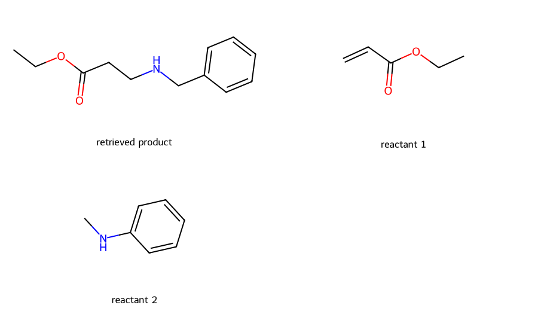
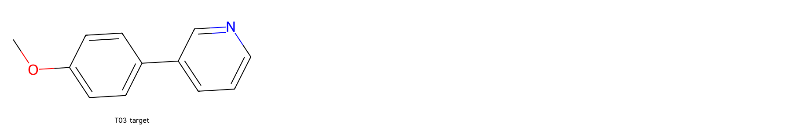
去重组4447900 → 实际来源4447900，来源分数13，组最高分13；组内1条来源，仅本条参与本次分析。
原文支持芳基格氏经锌盐转金属再与卤吡啶偶联得到目标；溴/氯底物是替代实验，NEP的结构解析也可疑，具体物料须按原文分开。
文献US20100184977A1 · ['p-0082'] · 原文已定位
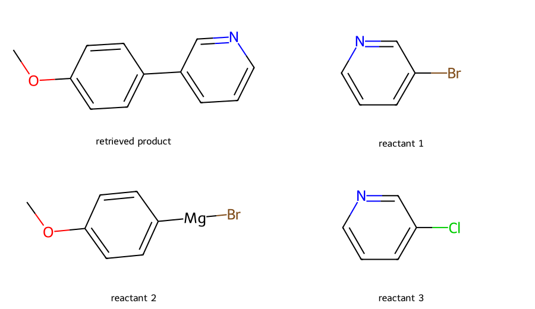
去重组4709472 → 实际来源4709472，来源分数19，组最高分19；组内4条来源，仅本条参与本次分析。
3-溴吡啶与对甲氧基苯硼酸构建目标，原文58%且有表征；本组已合并4条完全相同反应式。
文献US20110053930A1 · ['p-0326'] · 原文已定位
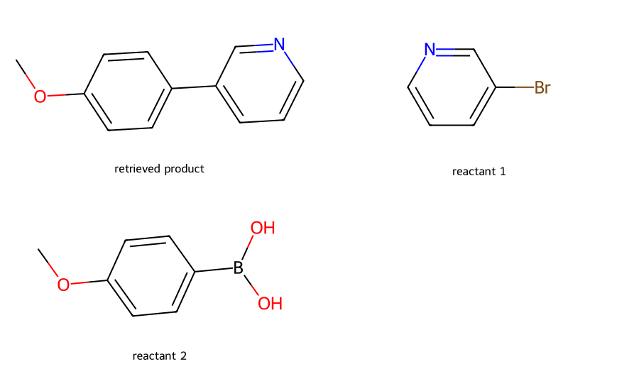
去重组1360583 → 实际来源6701007，来源分数22，组最高分22；组内5条来源，仅本条参与本次分析。
选中的22分来源明确3-碘吡啶与对甲氧基苯硼酸生成目标，原文67%；使用这一来源的映射和证据，不借代表行的分数或条件。
文献US20160185752A1 · ['p-0229'] · 原文已定位

去重组957487 → 实际来源957487，来源分数17，组最高分17；组内1条来源，仅本条参与本次分析。
与4709472同样的实验和产物，原文支持目标，但数组重复列出溴吡啶，使反应式字符串不同，方法仍重复。
文献EP09720039B1 · ['p0183'] · 原文已定位

去重组9446920 → 实际来源9446920，来源分数17，组最高分17；组内1条来源，仅本条参与本次分析。
吡啶硼酸酯与对甲氧基碘苯偶联，反转亲核/亲电两侧仍得到目标，原文80%；有用但仍属于Suzuki方法族。
文献US20230227428A1 · ['p-0367'] · 原文已定位

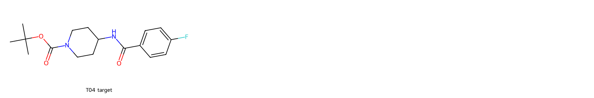
去重组3892443 → 实际来源3892443，来源分数13，组最高分13；组内1条来源，仅本条参与本次分析。
原文苄氯与胺的反应对应烷基化，库中产物却是苯甲酰胺；缺少羰基来源，不能擅自把苄氯修成酰氯。v3去重未消除该矛盾。
文献US20080280886A1 · ['p-0251'] · 原文已定位

去重组2276453 → 实际来源2512914，来源分数18，组最高分18；组内5条来源，仅本条参与本次分析。
哌啶酮与对甲苯胺还原胺化得到C4-N-Ar，目标为C4-NH-C(O)-Ar；不是同一类亲核/亲电端替换。
文献US20050277670A1 · ['p-1181'] · 原文已定位
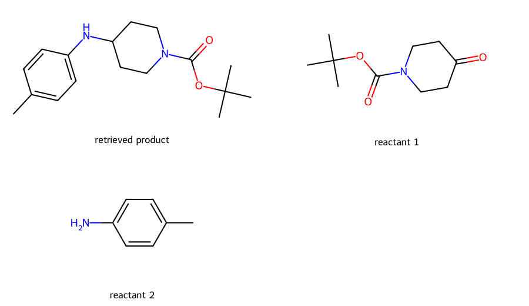
去重组590292 → 实际来源590292，来源分数20，组最高分20；组内2条来源，仅本条参与本次分析。
四氢哌啶酮与芳胺还原胺化不提供目标所需苯甲酰胺构建，Boc和母核重合不能代替反应方法对应。
文献EP07119933A1 · ['p0238'] · 原文已定位
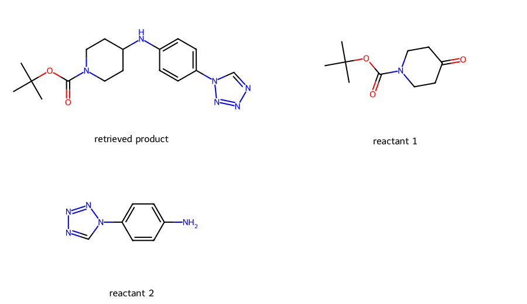
去重组2846763 → 实际来源2846763，来源分数18，组最高分18；组内1条来源，仅本条参与本次分析。
使用目标同一4-氟苯甲酰氯在含Boc体系中酰化胺，提供目标酰基C-N构建的局部依据；来源为杂芳胺，目标脂肪胺反应性不同，需重新验证条件。
文献US20080039499A1 · ['p-0160'] · 原文已定位
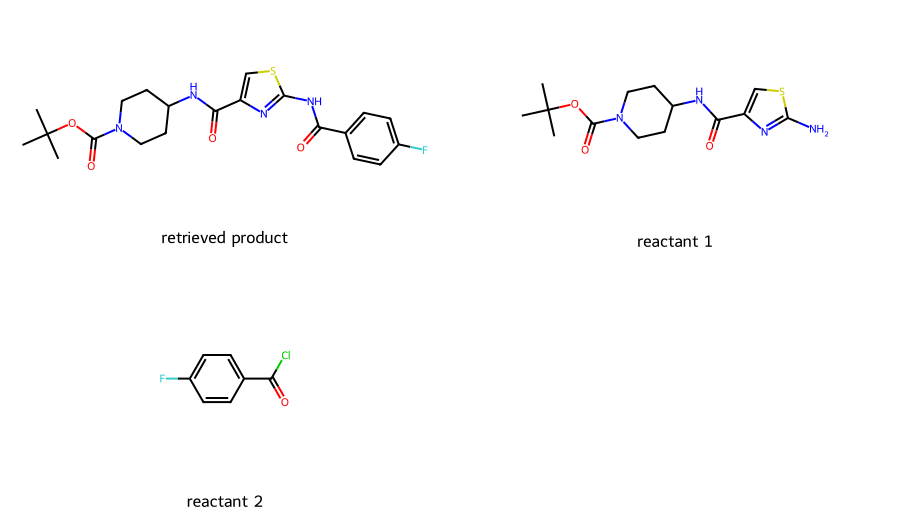
去重组1741786 → 实际来源1741786，来源分数16，组最高分16；组内3条来源，仅本条参与本次分析。
格氏试剂把Weinreb酰胺转为酮，目标需要保留C(O)-N酰胺连接；这一变化方向不支持目标酰胺。
文献EP18812115B1 · ['p0277'] · 原文已定位
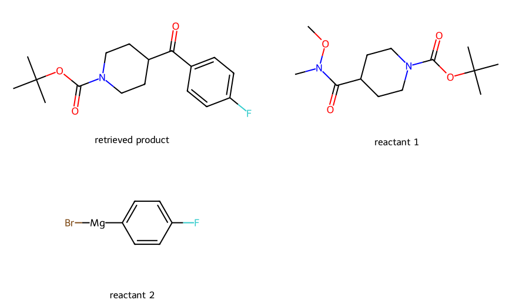
去重组3892443 → 实际来源3892443，来源分数13，组最高分13；组内1条来源，仅本条参与本次分析。
原文苄氯与胺的反应对应烷基化，库中产物却是苯甲酰胺；缺少羰基来源，不能擅自把苄氯修成酰氯。v3去重未消除该矛盾。
文献US20080280886A1 · ['p-0251'] · 原文已定位

去重组2089934 → 实际来源2089934，来源分数17，组最高分17；组内3条来源，仅本条参与本次分析。
相同Boc-4氨基哌啶与3乙炔基苯甲酸EDCI/DMAP偶联，换成目标4氟酸有明确单底物类比，来源93%仅属于该实验。
文献EP19893952B1 · ['p0512'] · 原文已定位
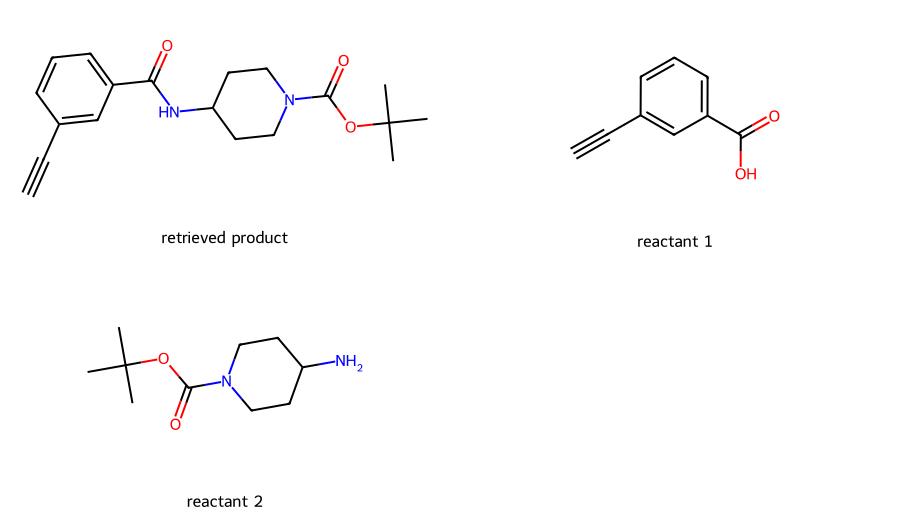
去重组9351003 → 实际来源9351003，来源分数17，组最高分17；组内1条来源，仅本条参与本次分析。
同一胺与芳酸EDCI/HOBt形成目标同类连接，但当前原文把碱写成TFA，计量又像TEA；方法有参考，具体试剂名称必须核实，最高分不是无错保证。
文献US20230101819A1 · ['p-0559'] · 原文已定位

去重组3901692 → 实际来源3901692，来源分数16，组最高分16；组内1条来源，仅本条参与本次分析。
来源描述用该Boc酰胺作为起始物制另一产物，库中输入输出同结构；MS335也不支持所列含Boc结构，不能当作目标酰胺形成先例。
文献US20080293771A1 · ['p-0275'] · 原文已定位
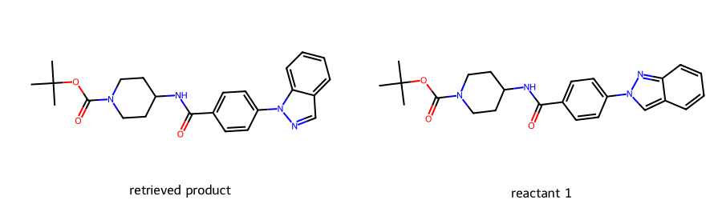
去重组4377108 → 实际来源4377108，来源分数20，组最高分20；组内3条来源，仅本条参与本次分析。
原文相同Boc胺与取代苯甲酸经活化偶联得到酰胺，提供目标换酸端的明确方法参考。
文献US20100093698A1 · ['p-0796'] · 原文已定位
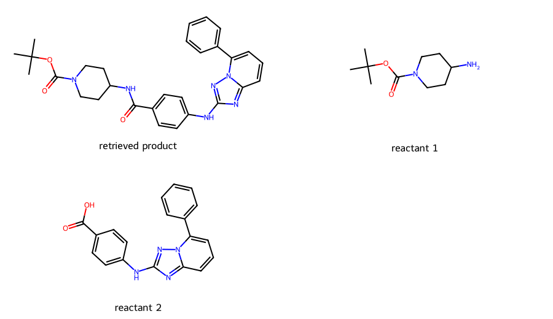
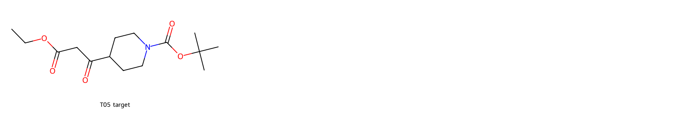
去重组7320132 → 实际来源7320132，来源分数13，组最高分13；组内1条来源，仅本条参与本次分析。
定位到两个连续原文段落：酸与Meldrum酸先酰化，再用乙醇回流得到目标85%。是有用的直接路线，但库中把起始物与中间体并列为同一步反应物，需要分步理解。
文献US09745288 · ['p-0358', 'p-0359'] · 原文已定位

去重组589604 → 实际来源589604，来源分数13，组最高分13；组内6条来源，仅本条参与本次分析。
原文按吡啶β-酮酯实例的方法制目标，参照实例产物不是真实共反应物。需要展开引用，不能直接照当前底物列表回放。
文献EP07112458A1 · ['p0404'] · 原文已定位

去重组4773801 → 实际来源4773801，来源分数16，组最高分16；组内4条来源，仅本条参与本次分析。
Vilsmeier型杂芳环甲酰化不能提供目标哌啶β酮酯，只共享Boc哌啶及羰基片段。
文献US20110152240A1 · ['p-0531'] · 原文已定位

去重组6211186 → 实际来源6211186，来源分数15，组最高分15；组内1条来源，仅本条参与本次分析。
已酰化Meldrum酸与乙醇反应得到目标β-酮酯，原文85%及NMR/HRMS。补出v2前排未展示的直接方法。
文献US20150051247A1 · ['p-0374'] · 原文已定位

去重组1234825 → 实际来源1234825，来源分数16，组最高分16；组内12条来源，仅本条参与本次分析。
哌啶羧酸乙酯与乙酸乙酯碱促缩合生成目标，原文47%；12份来源合并后仍保留这个直接策略。
文献EP11835025B1 · ['p0322'] · 原文已定位

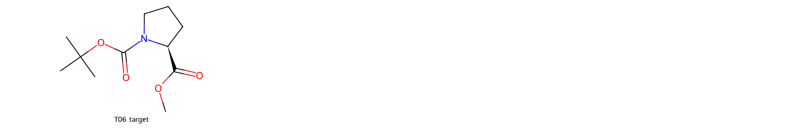
去重组7456459 → 实际来源7456459，来源分数15，组最高分15；组内2条来源，仅本条参与本次分析。
原文脯氨酸甲酯Boc保护，输入图给定手性但输出图丢失手性；方法可用，目标构型须额外核验，不将连接相同认定立体已证实。
文献US20180127430A1 · ['p-0626'] · 原文已定位
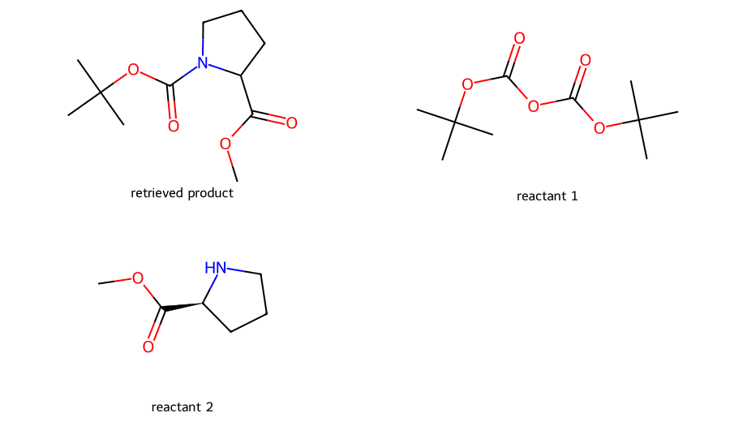
去重组1440748 → 实际来源1440748，来源分数17，组最高分17；组内20条来源，仅本条参与本次分析。
明确(S)脯氨酸甲酯Boc保护得到对应目标，原文95%及表征；比未指定构型的记录更直接。
文献EP14703747B1 · ['p0097'] · 原文已定位

去重组4746479 → 实际来源4746479，来源分数13，组最高分13；组内2条来源，仅本条参与本次分析。
原文D,L-脯氨酸先甲醇/SOCl2成酯再Boc保护，支持这两步化学方法但得到消旋材料；目标需改用对应手性原料并验证保持。
文献US20110106241A1 · ['p-0224'] · 原文已定位
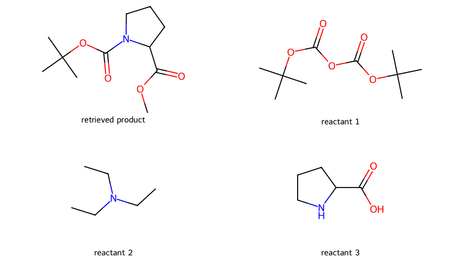
去重组1157858 → 实际来源1292196，来源分数21，组最高分21；组内21条来源，仅本条参与本次分析。
与1201567同一甲基化实验，化学方法可参考但手性证据不足；重复专利不提供额外的独立验证。
文献EP15192658B1 · ['p0365'] · 原文已定位

去重组1526887 → 实际来源1526887，来源分数13，组最高分13；组内4条来源，仅本条参与本次分析。
原文仅以A指代底物，抽成Boc苏氨酸样结构，与脯氨酸甲酯目标不一致；不能仅凭相同目标产物认可该映射和输入集合。
文献EP14703247B1 · ['p0083'] · 原文已定位
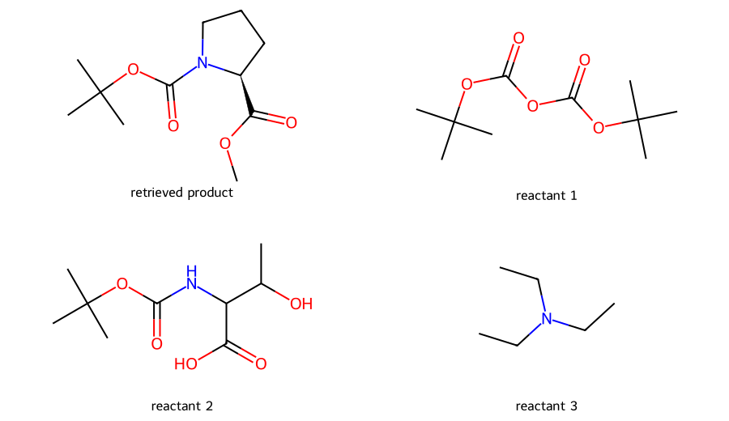
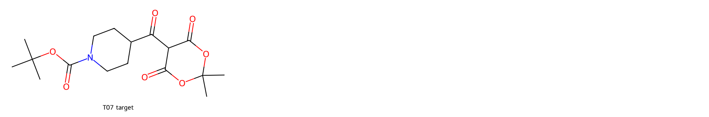
去重组1187797 → 实际来源6331131，来源分数18，组最高分18；组内13条来源，仅本条参与本次分析。
选中的18分来源DCC/DMAP酰化Meldrum酸直接得到目标；原文为粗品和MS，不能当作定量纯品收率。
文献US20150259354A1 · ['p-0544'] · 原文已定位

去重组3 → 实际来源3，来源分数19，组最高分19；组内10条来源，仅本条参与本次分析。
EDCI/DMAP促进哌啶羧酸与Meldrum酸酰化，原文86%，直接目标方法；已有环不是本步新形成。
文献US20170334917A1 · ['p-0765'] · 原文已定位

去重组6730054 → 实际来源6730054，来源分数16，组最高分16；组内9条来源，仅本条参与本次分析。
硫代酰胺与α-溴β-酮酯构建噻唑，不生成目标酰化Meldrum酸；Boc哌啶及羰基重合只是片段。
文献US20160237075A1 · ['p-0422'] · 原文已定位

去重组10288810 → 实际来源10288810，来源分数15，组最高分15；组内2条来源，仅本条参与本次分析。
2位带甲基Boc哌啶4羧酸与Meldrum酸进行相同酰化；对目标可换成不带甲基的酸，原文数值存在单位疑点，不能直接照抄计量。
文献US20250353858A1 · ['p-0514'] · 原文已定位
去重组11 → 实际来源11，来源分数19，组最高分19；组内17条来源，仅本条参与本次分析。
带顺式2甲基的酸端参与同类Meldrum酸酰化，原文79%；换成目标酸端是明确局部类比，不把来源手性结果套到目标。
文献US20170334917A1 · ['p-0790'] · 原文已定位
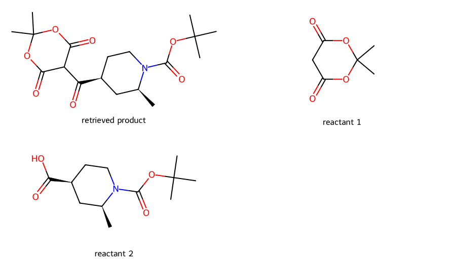
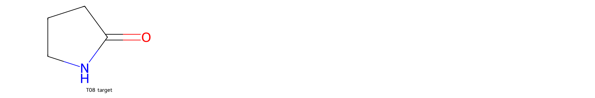
去重组6183104 → 实际来源6183104，来源分数12，组最高分12；组内3条来源，仅本条参与本次分析。
原文明确提出琥珀酰亚胺催化氢化得到2-吡咯烷酮，方向直接但本段是工艺概述，需继续取实际实施例。
文献US20150005510A1 · ['p-0022'] · 原文已定位
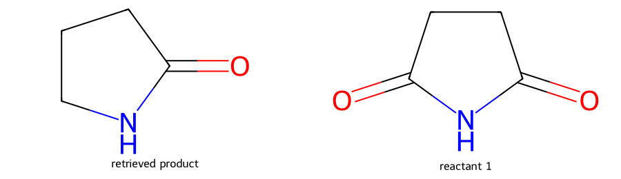
去重组2699596 → 实际来源4905717，来源分数17，组最高分17；组内5条来源，仅本条参与本次分析。
原文路线明确γ丁内酯与氨得到目标；乙炔用于前后其他步骤，不是该步必要共反应物。适合作方法参考，必须分步解释。
文献US07910577 · ['p-0069'] · 原文已定位
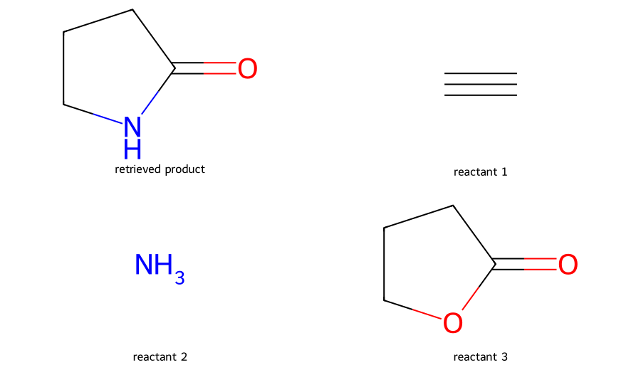
去重组2387040 → 实际来源4303866，来源分数15，组最高分15；组内9条来源，仅本条参与本次分析。
原文引用γ丁内酯与氨制目标的工业方法；属于背景引用，重复氨条目不能解释为独立投料或独立成功。
文献US07612216 · ['p-0005'] · 原文已定位
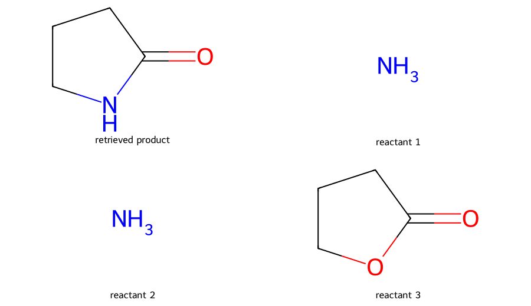
去重组4971202 → 实际来源4971202，来源分数13，组最高分13；组内1条来源，仅本条参与本次分析。
输入同时列出琥珀酰亚胺、内酯和氨，可能混合还原和内酯氨解两条路线；未定位原段落，不能把三者当作一锅配方。
文献US08017790 · ['ul0025-0002'] · 原文未定位
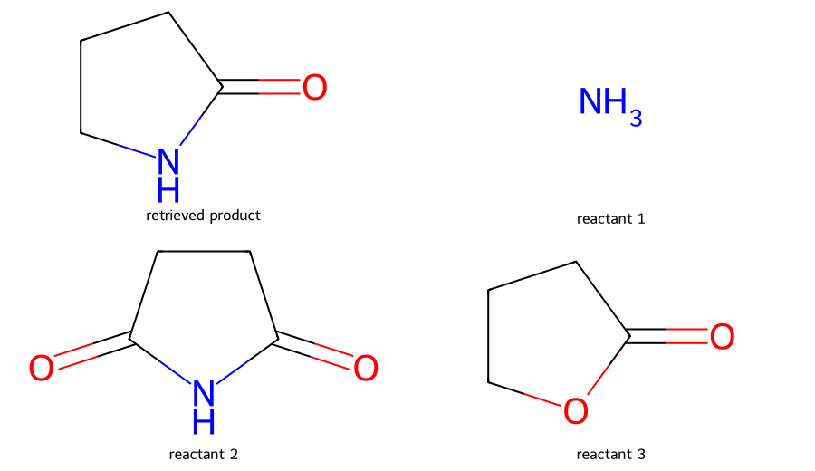
去重组649845 → 实际来源649845，来源分数12，组最高分12；组内8条来源，仅本条参与本次分析。
背景文献明确琥珀酸或酸酐在氨存在下加氢得到目标；二者是替代底物，不同时投料，作为不同于内酯法的参考路线。
文献EP02756233B1 · ['p0008'] · 原文已定位
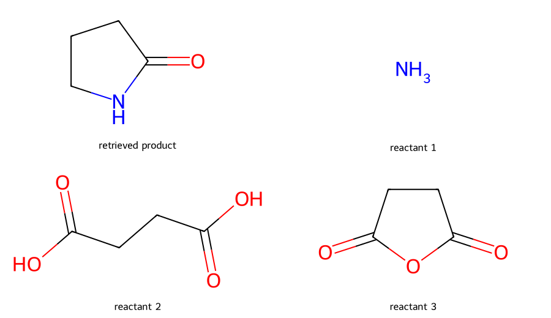
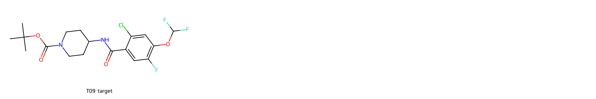
去重组9520473 → 实际来源9520473，来源分数15，组最高分15；组内1条来源，仅本条参与本次分析。
原文为芳酸与intermediate 5的HATU偶联，库中将后者解析成另一完整酰胺产物；当前底物图无法支持这一构建，须先修复代号对应。
文献US20230365541A1 · ['p-0607'] · 原文已定位
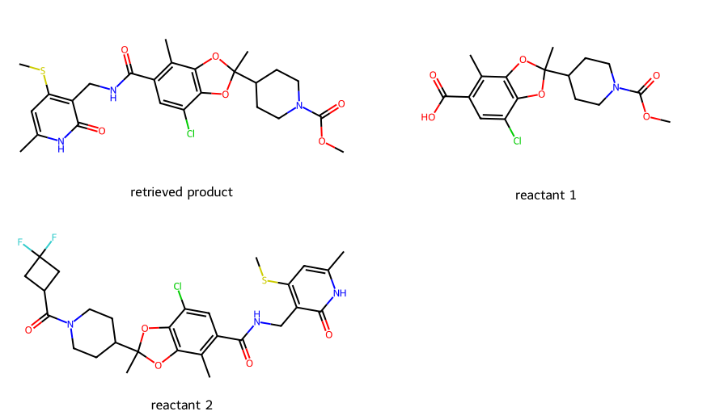
去重组6730054 → 实际来源6730054，来源分数16，组最高分16；组内9条来源，仅本条参与本次分析。
来源噻唑构建既不是目标酰胺，也不安装目标二氟甲氧基，只共享部分骨架。
文献US20160237075A1 · ['p-0422'] · 原文已定位

去重组4528366 → 实际来源4528366，来源分数21，组最高分21；组内1条来源，仅本条参与本次分析。
芳酸与环己胺形成酰胺并在复杂含保护基环境中报告产物，对目标芳酸与Boc氨基哌啶有局部酸胺缩合参考；两侧底物均需调整，不保证同条件成功。
文献US20100298377A1 · ['p-0296'] · 原文已定位
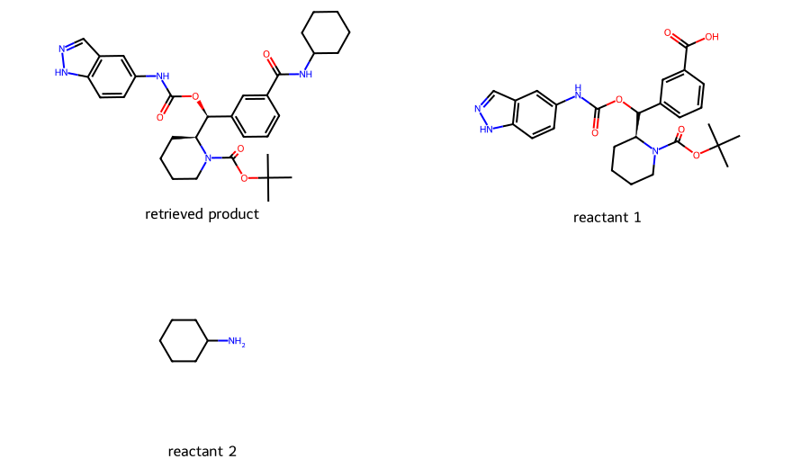
去重组4773801 → 实际来源4773801，来源分数16，组最高分16；组内4条来源，仅本条参与本次分析。
DMF/POCl3向杂芳环引入醛，目标需要芳酰胺而非该杂芳醛，不能因Boc哌啶重合认定适用。
文献US20110152240A1 · ['p-0531'] · 原文已定位
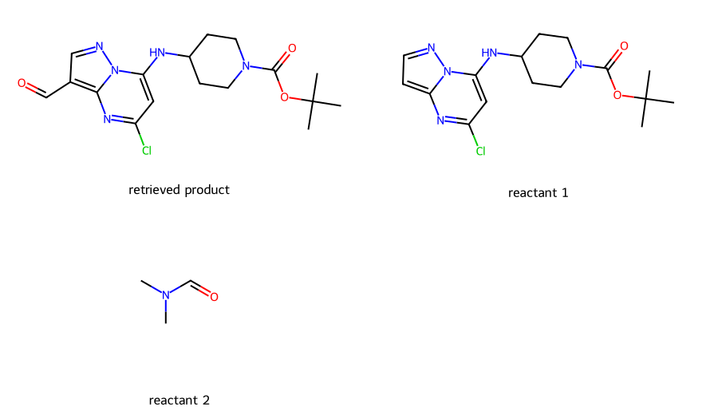
去重组9521556 → 实际来源9521556，来源分数17，组最高分17；组内2条来源，仅本条参与本次分析。
形成杂芳基与氮杂环的C-N键，不能提供目标的酰基C-N连接或OCHF2安装。
文献US20230365562A1 · ['p-1121'] · 原文已定位
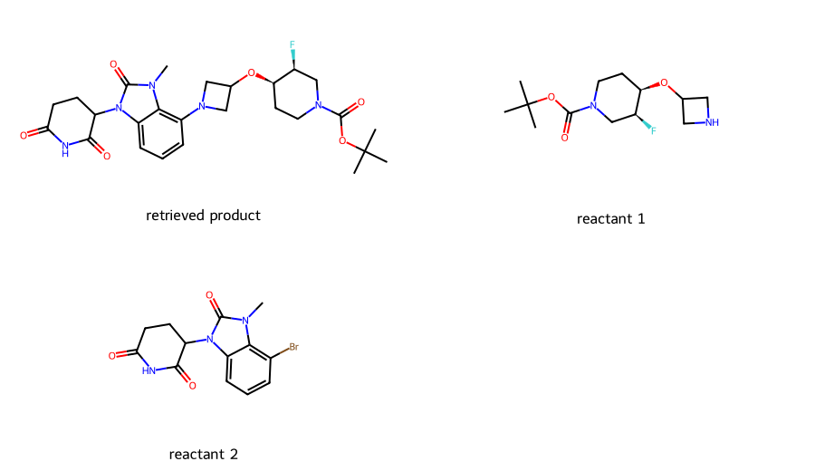
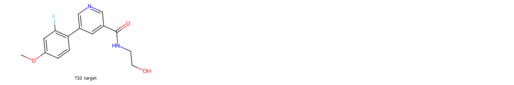
去重组543457 → 实际来源543457，来源分数13，组最高分13；组内2条来源，仅本条参与本次分析。
源反应安装大体积酯取代烷氧基，目标只需甲氧基及联芳/羟乙基酰胺；还存在起始酚结构解析疑点，只保留一般醚化线索。
文献EP06715252A1 · ['p0094'] · 原文已定位
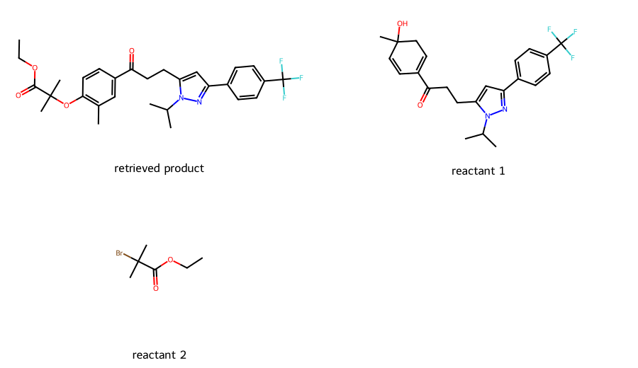
去重组540959 → 实际来源540959，来源分数19，组最高分19；组内7条来源，仅本条参与本次分析。
酚被特戊酰化成酯，不是目标甲氧基、联芳键或羟乙基酰胺构建。
文献EP06122948A2 · ['p0036'] · 原文已定位
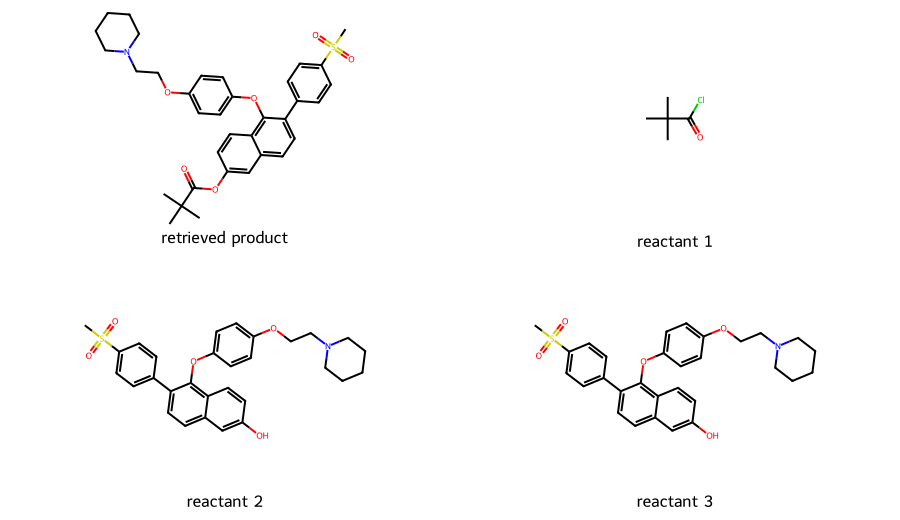
去重组537624 → 实际来源537624，来源分数21，组最高分21；组内2条来源，仅本条参与本次分析。
复杂伯醇与酚成醚，仅有一般芳醚构建关系；不能解决目标的联芳键及羟乙基酰胺。
文献EP05811684A1 · ['p0738'] · 原文已定位
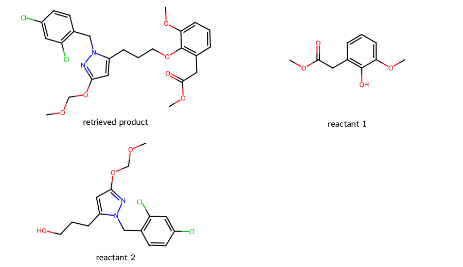
去重组4413166 → 实际来源4413166，来源分数21，组最高分21；组内1条来源，仅本条参与本次分析。
原文取代烟酸与乙醇胺通过TBTU/HOBt偶联，确实得到NHCH2CH2OH尾部；目标只需换酸端取代，具备清楚局部关联，但不解决另一段联芳键。
文献US20100137313A1 · ['p-1557'] · 原文已定位

去重组4413163 → 实际来源4413163，来源分数20，组最高分20；组内1条来源，仅本条参与本次分析。
取代烟酸和乙醇胺经T3P偶联，原文支持目标所需NHCH2CH2OH尾部；换酸端是明确类比，来源纯化及收率不能套用目标。
文献US20100137313A1 · ['p-1554'] · 原文已定位
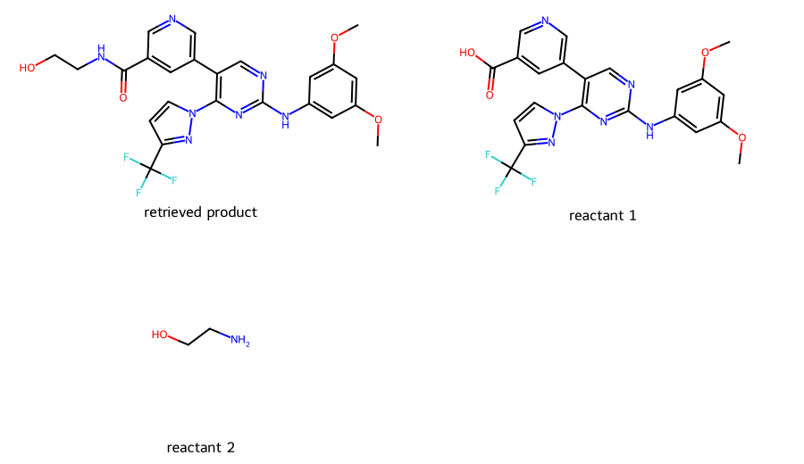
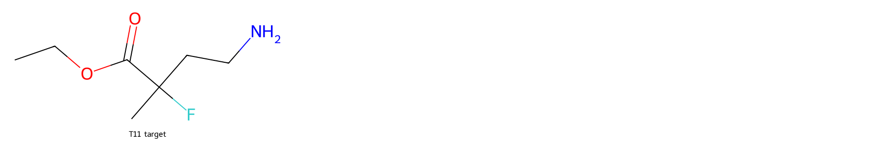
去重组2528494 → 实际来源4559092，来源分数15，组最高分15；组内2条来源，仅本条参与本次分析。
简单丙酸酯转酯没有验证目标αF/甲基及末端胺的构建或相容性，保留一般酯端操作线索。
文献US07652167 · ['p-0038'] · 原文已定位

去重组10115804 → 实际来源10115804，来源分数12，组最高分12；组内1条来源，仅本条参与本次分析。
3-苄氧丙醇与丙酰氯酯化后氢解除苄，得到羟丙基丙酸酯；目标氨基链位于酸端，不能把相同原子数的酯两端对调。
文献US20250074887A1 · ['p-0422'] · 原文已定位

去重组2922370 → 实际来源2922370，来源分数13，组最高分13；组内1条来源，仅本条参与本次分析。
来源为直链戊酸乙酯，输入包含THF和有机锂，未见目标氟与伯胺构建关系且原文缺失，不作目标正例。
文献US04003919 · ['p-0220'] · 原文未定位

去重组2904446 → 实际来源2904446，来源分数14，组最高分14；组内1条来源，仅本条参与本次分析。
乙氧基环二烯臭氧裂解得到不饱和羟基酯，目标α-氟支化氨基酯连接不同，不能从共同乙酯推出可迁移。
文献US03962354 · ['p-0070'] · 原文未定位
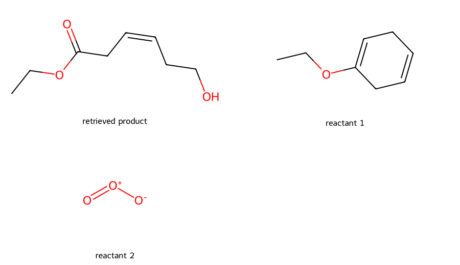
去重组1521681 → 实际来源1521681，来源分数12，组最高分12；组内2条来源，仅本条参与本次分析。
γ-丁内酯乙醇解得到羟基酯，目标还需不同α取代及OH到NH2等步骤；本例不直接提供这些必要转化。
文献EP12719088B1 · ['p0638'] · 原文已定位
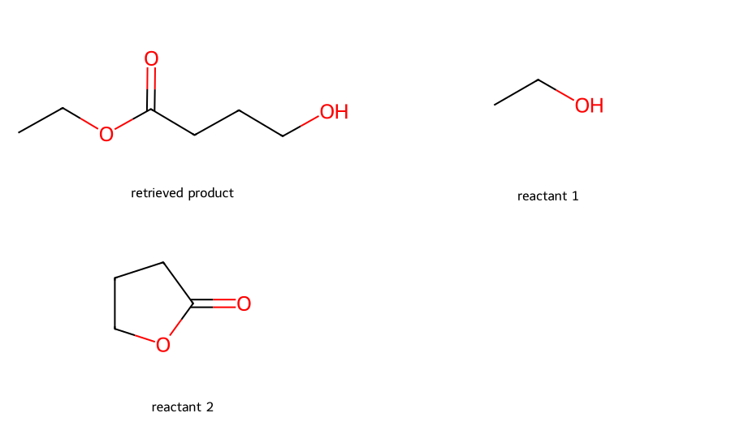